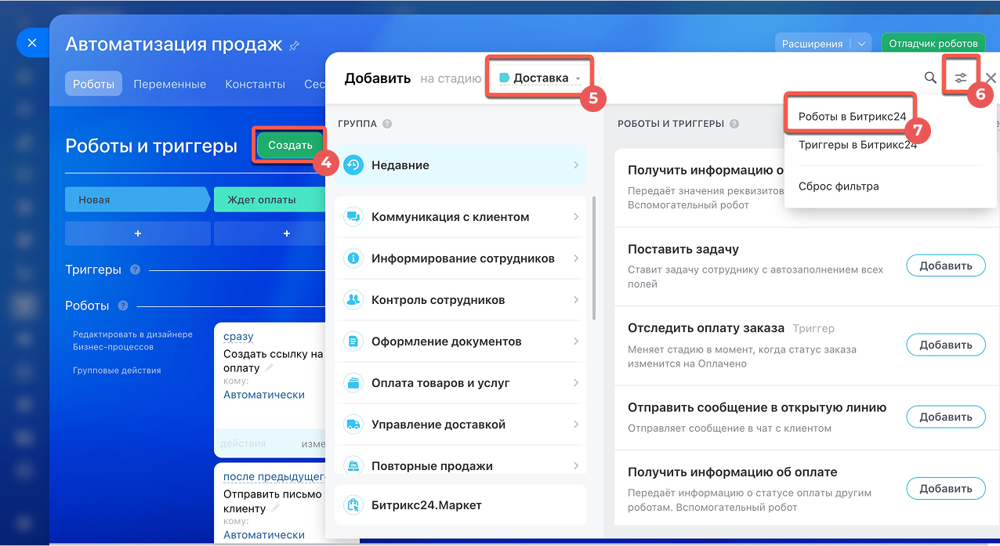
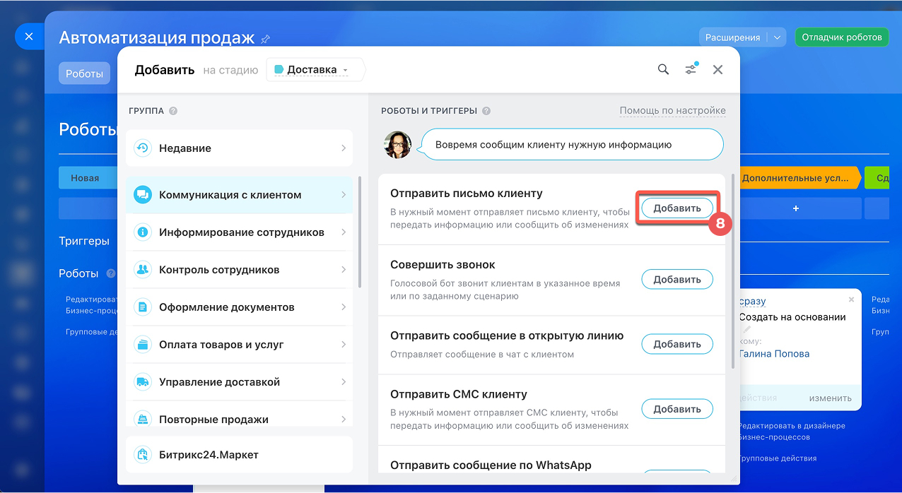
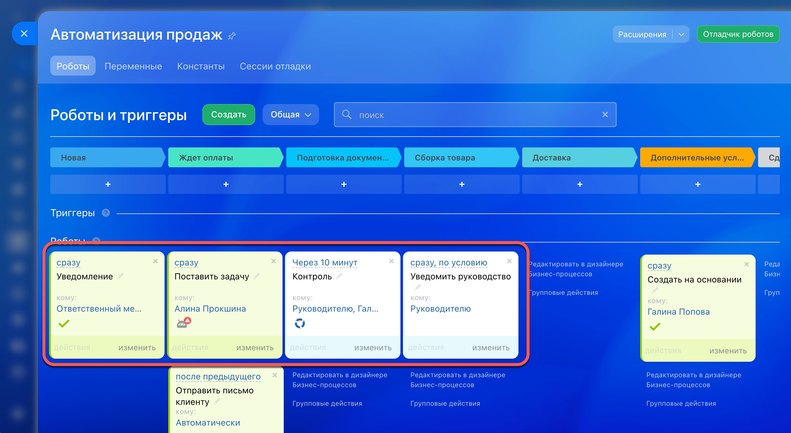
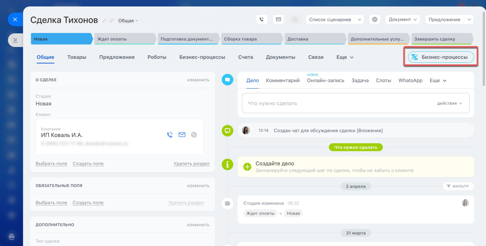
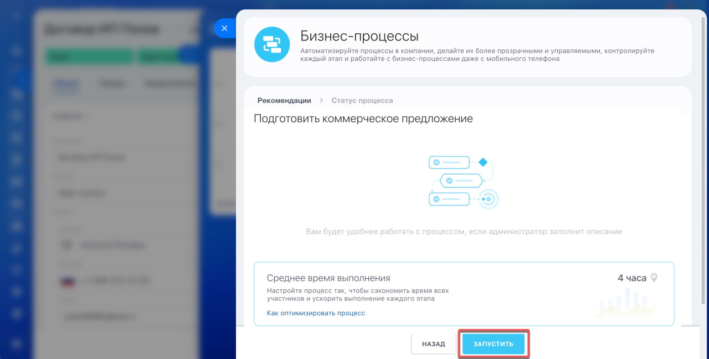

Роботы и бизнес-процессы в Битрикс24: как CRM сама подсказывает, что делать дальше
Хорошая CRM — это не система, которой управляет менеджер, а система, которая управляет вниманием менеджера: подсказывает следующий шаг, не даёт пропустить важное и не позволяет сделке «зависнуть» незамеченной. В Битрикс24 за это отвечают два инструмента автоматизации — роботы и бизнес-процессы. Разбираем, что они умеют и как выглядят в реальной работе.
Идеальная CRM не управляет продажей, а подсказывает менеджеру
Есть расхожее представление, что CRM — это система, в которой менеджер «отчитывается»: двигает карточки, заполняет поля, ставит себе задачи. На практике это работает наоборот. Мы считаем, что задача CRM — самой вести менеджера по сделке: напоминать о следующем шаге, не позволять пропустить обязательное действие и не давать заявке потеряться в общем потоке.
Именно для этого в Битрикс24 существует автоматизация — роботы и бизнес-процессы. Это не «дополнительная фича для продвинутых», а основа того, как CRM в принципе должна работать: без неё система остаётся просто базой данных, в которой правила держатся в голове у сотрудников.
Роботы — для правил внутри стадии, бизнес-процессы — для сценариев со многими участниками
Роботы и бизнес-процессы решают одну и ту же задачу — делают что-то без участия сотрудника, — но для разных ситуаций.
Роботы — простое правило «если — то»
Робот привязан к конкретной стадии воронки: сделка попала на неё — сработало действие. Отправить письмо, поставить задачу, уведомить руководителя, изменить ответственного. Настраивается за пару минут, без цепочек согласований.
Бизнес-процесс — сценарий с ветвлениями
Нужен, когда в цепочке участвует несколько сотрудников или отделов, а решение зависит от условий: согласовать договор, если сумма больше определённой — привлечь ещё и финансового директора. Собирается в визуальном конструкторе из готовых блоков.
Десятки готовых сценариев — на каждую стадию сделки
Роботов не нужно программировать — они уже есть в Битрикс24 в виде готовых блоков, сгруппированных по задачам: коммуникация с клиентом, информирование сотрудников, контроль исполнения, оформление документов, оплата, повторные продажи. Администратор просто выбирает нужный робот и добавляет его на стадию.

Например, в группе «Коммуникация с клиентом» есть роботы, которые сами напишут письмо, отправят СМС или сообщение в WhatsApp — и даже позвонят голосовым ботом, если нужно просто напомнить о встрече или сообщить статус заказа.

Цепочка роботов, которая не даёт сделке «зависнуть»
Самое ценное — не один отдельный робот, а цепочка из нескольких, настроенная на одну стадию. Она превращается в маленький сценарий контроля, который работает без напоминаний со стороны руководителя.

Именно так на практике реализуется принцип «ничего не забыть»: система не просто ставит задачу и ждёт, а сама проверяет, отреагировал ли на неё сотрудник, и эскалирует ситуацию, если время истекло. Руководителю не нужно вручную мониторить каждую сделку — CRM сообщит, если что-то пошло не по плану.
Когда решение зависит не от одного человека и не от одной стадии
Бизнес-процесс запускается не привязкой к стадии, а прямо из карточки сделки, лида или другого элемента CRM — как отдельное действие, которое можно вызвать в любой момент.

Хорошо видно на скриншоте выше: даже без отдельного бизнес-процесса Битрикс24 уже подсказывает менеджеру — «Создайте дело, чтобы не забыть о клиенте». Это тот самый принцип в действии — система не ждёт, пока сотрудник вспомнит о задаче сам, а сама напоминает о ней в нужный момент.
Перед запуском процесса Битрикс24 показывает и подсказки по заполнению полей, и среднее время выполнения — менеджер сразу понимает, чего ожидать, и может предупредить клиента о реальных сроках.

Не только уведомления и задачи
 Автоматически менять ответственного, если сделка «зависла» без движения
Автоматически менять ответственного, если сделка «зависла» без движения- Создавать документы — счета, коммерческие предложения, договоры — по шаблону
- Ставить сделку на паузу и напоминать о себе клиенту через заданное время
- Запускать согласование — с ветвлением по сумме, отделу или типу клиента
- Передавать данные во внешние сервисы и получать ответ обратно в карточку
- Предлагать повторную продажу — например, через оговорённое время после закрытия сделки
Как это выглядит в жизни
Оптовая компания: сделки больше не «зависают»
Менеджеры иногда забывали про заявки, если параллельно вели несколько сделок. Настроили роботов: если сделка не двигается больше суток, ответственному приходит напоминание, а если реакции всё равно нет — уведомление получает его руководитель.
Производственная компания: согласование без потерянных писем
Договоры согласовывались по переписке, и было не всегда понятно, у кого сейчас документ. Собрали бизнес-процесс: заявка на сумму выше определённого порога сначала уходит финансовому директору, а после — на подпись руководителю, с уведомлением на каждом шаге.
Сервисная компания: клиент не остаётся без ответа
После закрытия заявки о клиенте иногда забывали до следующего обращения. Настроили робота, который через оговорённое время создаёт менеджеру задачу — напомнить о себе, предложить сервисное обслуживание или повторную покупку.
Из чего складывается доработка и автоматизация
1. Разбираем текущий процесс
Смотрим, на каких шагах теряются сделки и заявки, что делается вручную и что реально стоит автоматизировать в первую очередь.
2. Выбираем инструмент
Простое правило на одной стадии закрываем роботом, сценарий с несколькими участниками — собираем в виде бизнес-процесса.
3. Настраиваем и проверяем
Собираем роботов и бизнес-процессы, проверяем работу через отладчик — убеждаемся, что условия и последовательность действий сработали правильно.
4. Показываем результат команде
Демонстрируем, как автоматизация работает на реальных сделках — что именно система теперь делает сама и что изменилось для сотрудников.
5. Донастраиваем по мере роста
Автоматизация — это не разовая настройка: по мере появления новых правил и процессов дорабатываем роботов и бизнес-процессы дальше.
О чём стоит знать до настройки автоматизации
- Роботы и бизнес-процессы в CRM доступны не на всех тарифах Битрикс24 — это стоит уточнить заранее
- Не стоит автоматизировать всё подряд «про запас» — начинать лучше с шагов, на которых реально теряются сделки
- Для бизнес-процессов с константами (например, кто утверждает документ) значения должен указать администратор — без этого процесс не запустится
- Настроенную автоматизацию стоит периодически пересматривать — вместе с процессами компании меняются и правила, по которым она должна работать
Что обычно идёт до автоматизации и после неё
Если пока не очевидно, какие правила вообще стоит автоматизировать, — сначала полезно прочитать про бизнес-анализ перед внедрением: он превращает разрозненные пожелания в понятную схему процесса. А общий обзор того, из чего складывается настройка Битрикс24 — в статье про настройку функционала.
Хотите, чтобы CRM сама вела сделку по нужным шагам?
Разберём, на каких этапах у вас теряются сделки и заявки, и настроим роботов и бизнес-процессы так, чтобы система сама подсказывала менеджерам, что делать дальше.